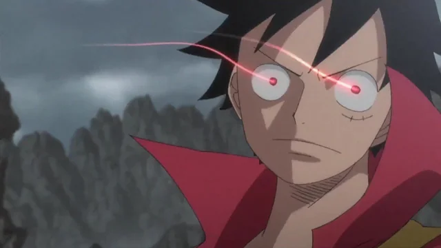
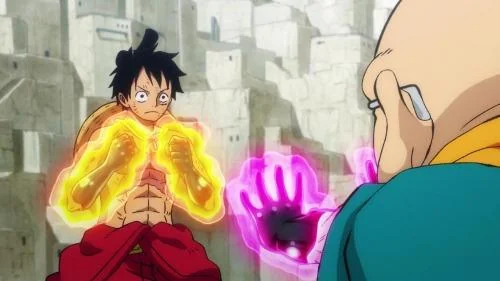
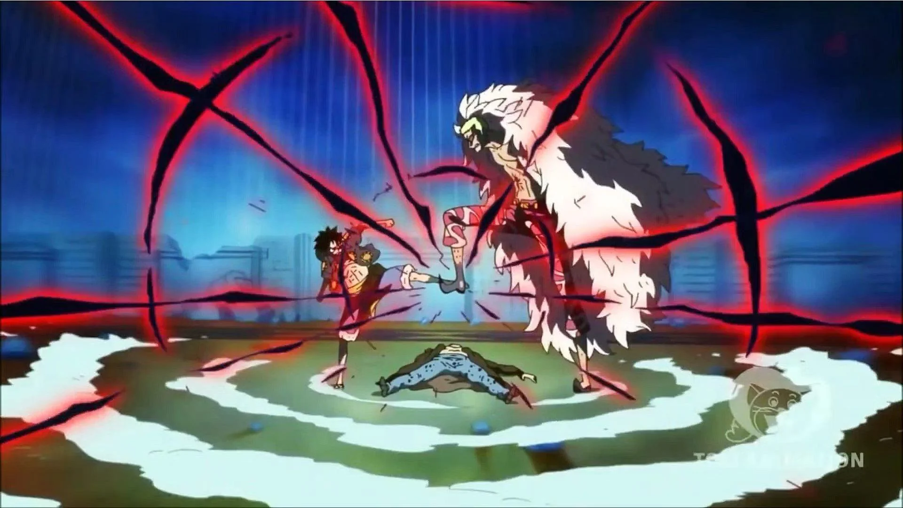

En el universo de One Piece, Haki es una fuerza misteriosa que reside en todos los seres vivos, permitiéndoles utilizar su energía espiritual para realizar acciones extraordinarias. Se puede entender como una manifestación de la voluntad de las personas, y aunque todos poseen esta capacidad, la mayoría no la nota o no logra despertarla. El Haki se divide en tres tipos principales: Haki de observacion (Kenbunshoku Haki),Haki de armadura (Busoshoku Haki) y Haki del rey (Haoshoku Haki).
El Kenbunshoku Haki, también llamado "Mantra" en lugares como Skypiea, permite al usuario percibir el mundo a través de la conciencia espiritual. Es como tener un "sexto sentido", ya que te permite detectar presencias ocultas, intenciones hostiles, emociones y, en niveles avanzados, incluso ver brevemente el futuro. Quien domina este Haki puede luchar sin necesidad de ver, esquivar ataques de forma instintiva o detectar enemigos a kilómetros de distancia. Por ejemplo, Usopp en Dressrosa logra despertar esta habilidad para disparar a enemigos que ni siquiera ve. Pero el mayor ejemplo es Charlotte Katakuri, quien puede prever los próximos segundos de una pelea, dándole una enorme ventaja. Este tipo de Haki se entrena principalmente mediante la concentración y la calma interior, algo que cuesta más a personajes impulsivos, como Luffy. Sin embargo, con práctica intensa, se puede alcanzar un nivel increíblemente alto.
El Busoshoku Haki es una energía espiritual que recubre el cuerpo o las armas del usuario, endureciéndolos como si fueran acero invisible. Permite tocar y dañar a usuarios de Frutas del Diablo tipo Logia, que normalmente serían intangibles, como el caso de Smoker, Enel o Kizaru. Este Haki es muy usado en combate cuerpo a cuerpo. Se puede manifestar como una capa negra brillante que endurece partes del cuerpo, como vemos en Luffy, Zoro o Vergo. También puede envolverse en proyectiles o espadas. En niveles avanzados, como el que enseñan en el País de Wano, puede incluso penetrar dentro del cuerpo del enemigo, destruyendo desde adentro sin necesidad de contacto fuerte (esto lo aprende Luffy durante su entrenamiento con Hyogoro en Udon). El Busoshoku se entrena enfrentándose a enemigos más fuertes y desarrollando una fuerte voluntad de proteger o superar límites físicos.
Este es el más raro y especial de los tres. Solo 1 de cada varios millones de personas nace con la capacidad de usar el Haoshoku Haki, y no se puede aprender: o nacés con él o no. Este poder permite imponer tu voluntad sobre otros, haciendo que los más débiles queden inconscientes al instante si se enfrentan a ti. Es un aura dominante que revela el espíritu de un verdadero líder. Luffy lo usa por primera vez inconscientemente en el archipiélago Sabaody para salvar a Keimi, y luego lo domina progresivamente en Marineford, en Dressrosa y plenamente en Wano. En niveles avanzados, el Haoshoku puede infundirse en ataques físicos, aumentando su poder sin necesidad de contacto directo. Este tipo de uso lo vemos en personajes de élite como Kaido, Shanks, Luffy y Zoro. No se trata solo de fuerza: el Haoshoku representa una voluntad que nace para liderar o cambiar el mundo. Muchos grandes personajes, como Roger, Barbablanca, Big Mom, Rayleigh, Yamato o incluso Doflamingo, poseen esta forma de Haki.
